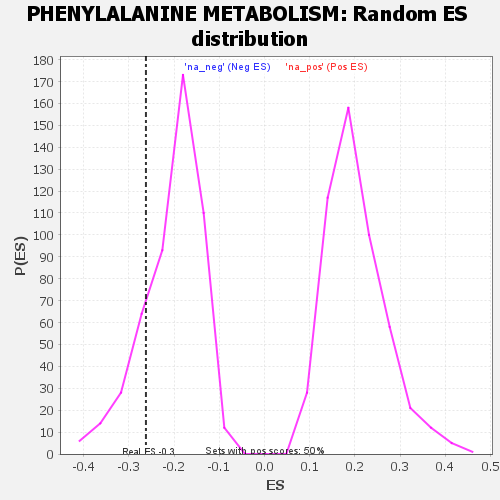

| | | Dataset | GSEA RNK clr Maaslin2 MucosalvsLuminal KO - DistalColon.rnk |
| Phenotype | NoPhenotypeAvailable |
| Upregulated in class | na_neg |
| GeneSet | PHENYLALANINE METABOLISM |
| Enrichment Score (ES) | -0.26214832 |
| Normalized Enrichment Score (NES) | -1.2907287 |
| Nominal p-value | 0.176 |
| FDR q-value | 0.38836208 |
| FWER p-Value | 1.0 |
Table: GSEA Results Summary
 Fig 1: Enrichment plot: PHENYLALANINE METABOLISM
Fig 1: Enrichment plot: PHENYLALANINE METABOLISM
Profile of the Running ES Score & Positions of GeneSet Members on the Rank Ordered List

Fig 2: PHENYLALANINE METABOLISM: Random ES distribution
Gene set null distribution of ES for PHENYLALANINE METABOLISM